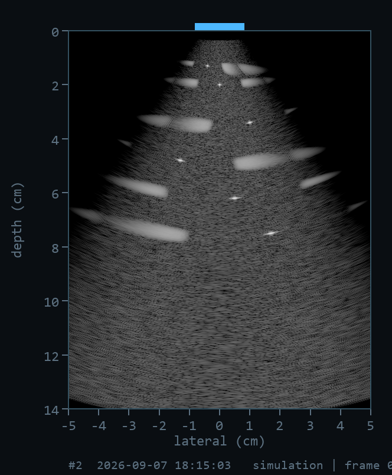
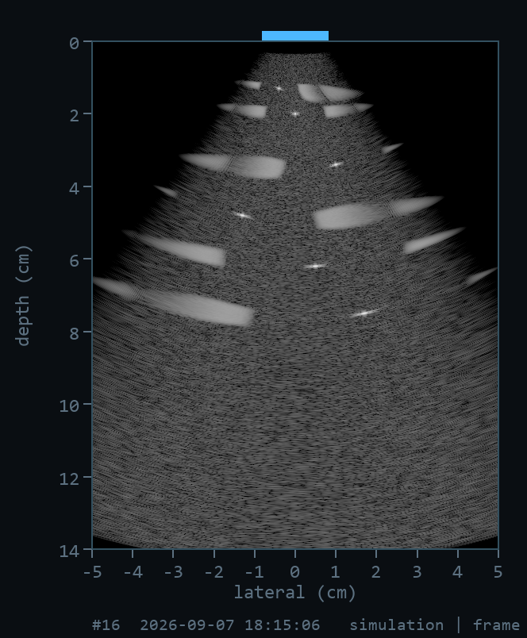
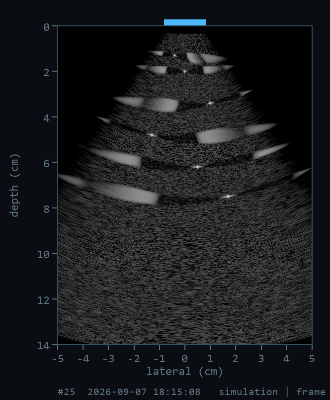
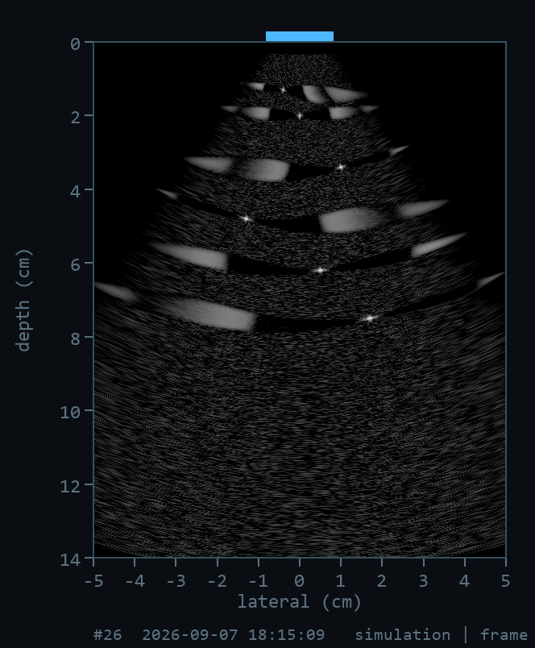
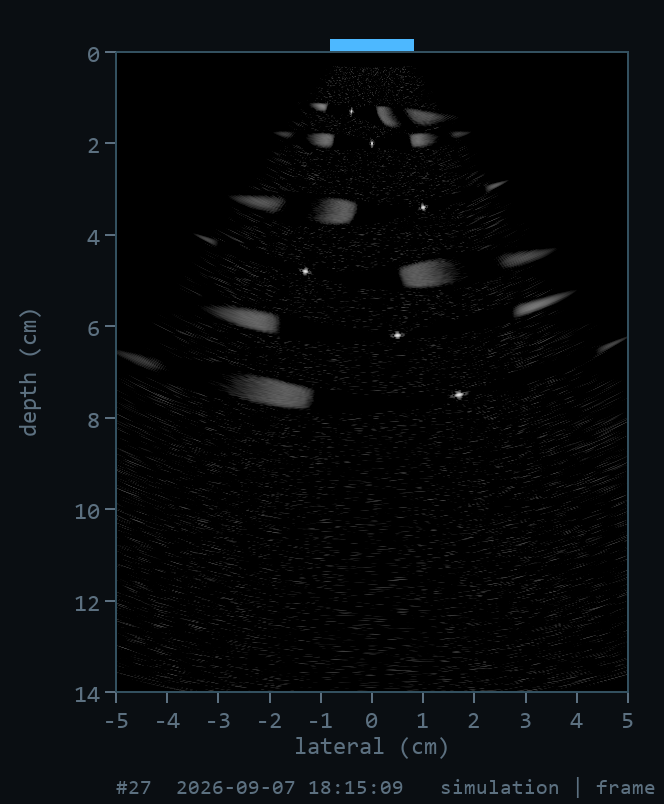
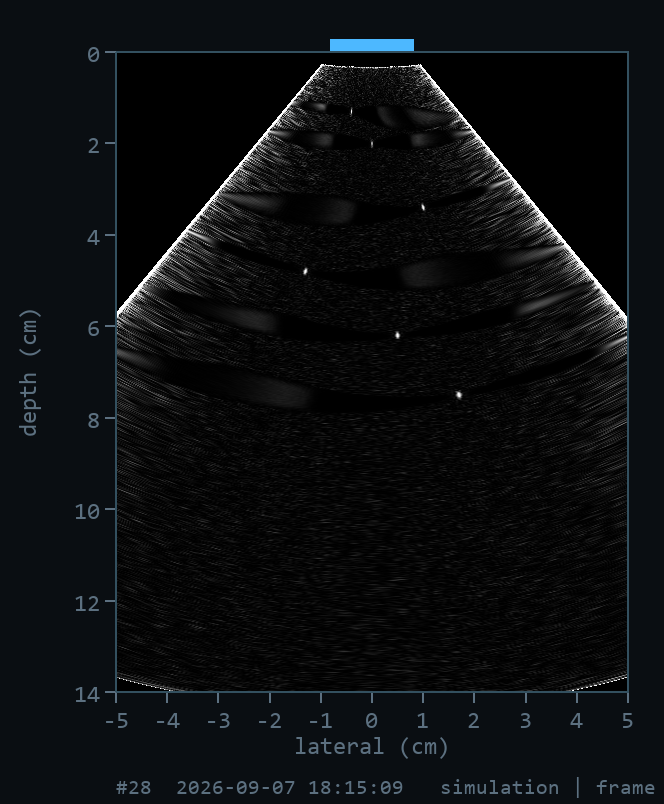

SIMULATION REHEARSAL ONLY. A candidate improved the declared wire score on separate frames; test another target position next. This is not evidence of improvement on the physical probe.
Scores use linear ordinary-DAS data with fixed physical regions. Lower is preferred; candidates losing more than half the normalized reflector peak, increasing clutter p95 by over 3 dB, or increasing clutter energy ratio by over 50% are rejected. Coherence-weighted images are comparisons only. A wire cannot establish tissue texture quality.






| Trial | Score | Lateral −6 dB mm | Axial −6 dB mm | Clutter p95 dB | Normalized peak |
|---|---|---|---|---|---|
| display-reference | unresolved | 1.138 | 0.363 | -40.2 | 0.1812 |
| baseline | 0.000 | 1.138 | 0.363 | -40.2 | 0.1812 |
| t0-0 | 0.071 | 1.162 | 0.426 | -39.1 | 0.1647 |
| t0-1 | 0.062 | 1.129 | 0.445 | -39.0 | 0.1613 |
| t0-2 | 0.000 | 1.138 | 0.363 | -40.2 | 0.1812 |
| t0-3 | 0.036 | 1.137 | 0.402 | -40.1 | 0.1758 |
| t0-4 | 0.113 | 1.133 | 0.464 | -38.6 | 0.1456 |
| t0-5 | 0.012 | 1.133 | 0.362 | -40.8 | 0.1776 |
| band-0 | unresolved | 1.475 | 0.754 | -31.9 | 0.0417 |
| band-1 | 0.195 | 1.274 | 0.557 | -38.0 | 0.1099 |
| band-2 | unresolved | 1.343 | 0.653 | -37.5 | 0.0811 |
| band-3 | 0.003 | 1.192 | 0.443 | -39.9 | 0.1515 |
| band-4 | 0.034 | 1.240 | 0.541 | -41.0 | 0.1251 |
| band-5 | 0.000 | 1.138 | 0.363 | -40.2 | 0.1812 |
| apod-0 | unresolved | 0.736 | 0.363 | -33.5 | 0.1808 |
| apod-1 | -0.132 | 0.956 | 0.363 | -39.7 | 0.1809 |
| apod-2 | -0.034 | 1.079 | 0.363 | -40.0 | 0.1813 |
| apod-3 | 0.038 | 1.219 | 0.363 | -40.5 | 0.1787 |
| matched-0 | -0.132 | 0.956 | 0.363 | -39.7 | 0.1809 |
| matched-1 | unresolved | 1.021 | 0.509 | -39.3 | 0.0518 |
| validation-0-baseline | unresolved | 1.131 | 0.361 | -40.2 | 0.1808 |
| validation-0-candidate | unresolved | 0.951 | 0.362 | -39.7 | 0.1809 |
| validation-1-baseline | unresolved | 1.130 | 0.361 | -40.8 | 0.1816 |
| validation-1-candidate | unresolved | 0.952 | 0.362 | -39.8 | 0.1817 |
| display-cf-0.25 | unresolved | 0.804 | 0.363 | -46.1 | 0.1808 |
| display-cf-0.5 | unresolved | 0.704 | 0.363 | -51.7 | 0.1806 |
| display-cf-1.0 | unresolved | 0.594 | 0.362 | -62.7 | 0.1803 |
| coherence-map | unresolved | 0.716 | 1.239 | -21.9 | 0.0000 |
[
{
"frame": 8,
"score": -0.133349956012691,
"passed": true
},
{
"frame": 15,
"score": -0.13095936448926168,
"passed": true
}
]